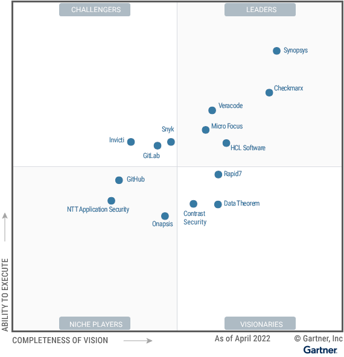

请访问原文链接：Magic Quadrant for Application Security Testing 2022 查看最新版。原创作品，转载请保留出处。
作者主页：sysin.org
Gartner 魔力象限：应用程序安全测试 2022
Magic Quadrant for Application Security Testing
Published 18 April 2022
魔力象限
现代应用程序设计和 DevSecOps 的加速采用正在扩大 AST 市场的范围。安全和风险管理领导者可以通过在软件交付生命周期中无缝集成和自动化 AST 来满足更紧迫的期限并测试更复杂的应用程序。
市场定义/描述：
Gartner 将应用程序安全测试 (AST) 市场定义为旨在分析和测试应用程序的安全漏洞的产品和服务的买家和卖家。这个市场是高度动态的，并且会随着不断变化的 应用架构和支持技术而继续经历快速发展。
在此分析和供应商评估中，我们将继续增加对新兴技术和方法以及解决 它们带来的新要求的 AST 工具的关注。总体而言，市场包括提供核心测试功能的工具——例如静态、动态和交互式测试； 软件组成分析（SCA）； 以及各种可选的专用功能。
AST 工具作为本地软件提供，或者更常见的是作为基于软件即服务 (SaaS) 的订阅产品提供。许多供应商提供这两种选择。核心功能提供基础测试功能，大多数组织使用一种或多种类型，包括 ：
- 静态 AST (SAST) 和 / 或测试阶段分析应用程序的源代码、字节码或二进制代码中的安全漏洞。的编程 通常在软件开发生命周期 (SDLC)
- 动态 AST (DAST) 在测试或操作阶段分析处于运行（即动态）状态的应用程序。DAST 模拟针对应用程序的攻击（通常是支持 Web 的应用程序，但越来越多的应用程序编程接口 [API]），分析应用程序的反应，从而确定它是否易受攻击。
- 交互式 AST (IAST) 检测正在运行的应用程序（例如，通过 Java 虚拟机 [JVM] 或 .NET 公共语言运行时 [CLR]），并检查其操作以识别漏洞。大多数实现被认为是被动的，因为它们依赖于其他应用程序测试来创建活动。然后 IAST 工具进行评估。
- SCA 用于识别应用程序中使用的开源组件，以及不太常见的商业组件。由此，可以识别已知的安全漏洞、潜在的许可问题和操作风险。
可选功能提供更专业的测试形式，通常根据组织的应用程序组合或应用程序安全程序成熟度来补充核心功能。他们包括：
- API 测试：API 已成为 工具 现代应用程序（例如，单页或移动应用程序）的重要组成部分，但传统的 AST 集 可能无法完全测试它们，从而导致需要专门的工具和功能。在开发和生产环境中发现 API 和测试 API 源代码的能力，以及摄取记录的流量或 API 定义以支持正在运行的 API 测试的能力，都是典型的功能。
- 应用程序安全编排和关联 (ASOC)：ASOC 工具通过自动化工作流程和处理结果来简化软件漏洞测试和修复。他们在开发生命周期和项目内和跨开发生命周期和项目进行自动化安全测试，同时从多个来源获取数据。ASOC 工具关联和分析调查结果以集中努力，以便更轻松地解释、分类和补救。它们充当应用程序开发和安全测试之间的管理和编排层。
- 关键业务 AST：在大型业务应用程序（例如 SAP、Oracle、Salesforce）的上下文中，识别应用程序代码中的漏洞（例如 ABAP 或其他供应商特定的定制语言），以及错误配置、已知漏洞和导致安全风险的错误。
- 容器安全：容器安全扫描检查容器镜像，或部署前完全实例化的容器，以发现安全问题。容器安全工具专注于各种任务，包括配置强化和漏洞评估任务。工具还会扫描是否存在机密信息，例如硬编码凭据或身份验证密钥。容器安全扫描工具可以作为应用程序部署过程的一部分运行，或者与容器存储库集成，因此可以在存储映像以备将来使用时执行安全评估。
- 开发人员支持：开发人员支持工具和功能支持开发人员和工程团队成员努力创建安全代码。这些工具主要侧重于安全培训和漏洞修复指导——以独立形式或集成到开发环境中。
- 模糊测试：模糊测试依赖于向程序提供随机、格式错误或意外的输入来识别潜在的安全漏洞——例如，应用程序崩溃或异常行为、内存泄漏或缓冲区溢出，或其他导致程序处于不确定状态的结果。模糊测试，有时称为 非确定性 测试，可用于大多数类型的程序，尽管它对依赖大量输入处理的系统（例如，Web 应用程序和服务、API）特别有用。
- 基础架构即代码 (IaC) 测试：Gartner 将 IaC 定义为软件定义计算 (SDC)、网络和存储基础架构作为源代码的创建、配置和配置。IaC 安全测试工具有助于确保符合常见的配置强化标准，识别与特定操作环境相关的安全问题，定位嵌入式机密，并执行支持组织特定标准和合规性要求的其他测试。
- 移动 AST (MAST)：这解决了与测试移动应用程序相关的特殊要求，例如在使用 iOS、Android 或其他操作系统的设备上运行的应用程序。这些工具通常使用经过优化的传统测试方法（例如，SAST 和 DAST），以支持通常用于开发移动和 / 或物联网 (IoT) 应用程序的语言和框架。他们还测试这些环境特有的漏洞和安全问题。
Gartner 继续观察到，AST 市场发展的主要驱动力是需要支持企业 DevSecOps 和云原生应用程序计划。客户需要能够提供高可靠性、高价值的发现，同时又不会不必要地减慢开发工作的产品。客户希望产品能够更早地融入开发过程，测试通常由开发人员而不是安全专家驱动。因此，该市场评估主要关注买方的需求，包括支持对各种应用程序类型的快速准确测试，能够以越来越自动化的方式集成到整个软件交付工作流程中。

领导者（Leaders）：
- Synopsys
- Checkmarx
- Veracode
- Micro Focus
- HCL Software
挑战者（Challengers）：见图
有远见者（Visionaries）：见图
特定领域者（Niche Players）：见图
查看完整报告（限期公开）：https://www.gartner.com/doc/reprints?id=1-29S27T33&ct=220419&st=sb
如何选择
在特定市场内定位技术参与者。
主要技术市场上有哪些竞争参与者？他们如何为您提供长期帮助？Gartner 魔力象限是对特定市场的巅峰研究，可帮您广泛了解市场竞争对手的相对位置 (sysin)。利用图示法和一系列统一的评估标准，魔力象限可帮助您快速确定技术提供商执行其既定愿景的情况，并参照 Gartner 的市场观点了解其表现。
如何使用 Gartner 魔力象限？
面对特定投资机会考虑技术提供商时，请借助 Gartner 魔力象限迈出第一步。
请记住，专注于领导者象限不一定是最好的行动方案。有充分的理由考虑市场挑战者。特定领域者可能比市场领导者更能满足您的需求。这完全取决于提供商如何与您的业务目标保持一致。
Gartner 魔力象限如何发挥作用？
面对快速增长和提供商差异化明显的众多市场，Gartner 魔力象限用图形化方法划分出四类提供商：
- 领导者很好地执行了当前愿景 (sysin)，并为未来做好了充分准备
- 有远见者了解市场发展方向，或者有改变市场规则的设想，但执行效果不尽如人意。
- 特定领域者成功专注于一个小的细分市场，或者目标不明确，创新和表现未能超越竞争对手。
- 挑战者当前表现很好，或者可能在大部分细分市场占据主导地位，但未表现出对市场方向的了解。
试用领导者产品
领导者（Leaders）：
- Synopsys (SAST、DAST、SCA & IAST)：暂无
- Checkmarx (SAST)：Checkmarx SAST 9.5 for Windows - 源代码扫描 (静态应用安全测试)
- Veracode (SAST、DAST、SCA & IAST)：暂无
- Micro Focus (SAST、DAST、SCA)：Fortify Static Code Analyzer 24.4 for macOS, Linux & Windows - 静态应用安全测试
- HCL Software (SAST, DAST, IAST, and SCA)：HCL AppScan Standard 10.11.0 for Windows - Web 应用程序安全测试
挑战者（Challengers）：
- Invicti (DAST & IAST)
有远见者（Visionaries）：

文章用于推荐和分享优秀的软件产品及其相关技术，所有软件默认提供官方原版（免费版或试用版），免费分享。对于部分产品笔者加入了自己的理解和分析，方便学习和研究使用。任何内容若侵犯了您的版权，请联系作者删除。如果您喜欢这篇文章或者觉得它对您有所帮助，或者发现有不当之处，欢迎您发表评论，也欢迎您分享这个网站，或者赞赏一下作者，谢谢！
 支付宝赞赏
支付宝赞赏  微信赞赏
微信赞赏赞赏一下
敬请注册！点击 “登录” - “用户注册”（已知不支持 21.cn/189.cn 邮箱）。 请勿使用联合登录（已关闭）。